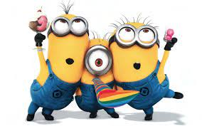
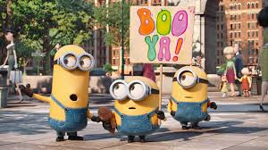

MINIONS
MAIN ACTORS: Sandra Bullock. Scarlet Overkill ; Jon Hamm. Herb Overkill ; Michael Keaton. Walter Nelson ; Pierre Coffin. The Minions ; Allison Janney. Madge Nelson.
SYNOPSIS:Evolving from single-celled yellow organisms at the dawn of time, Minions live to serve, but find themselves working for a continual series of unsuccessful masters, from T. Rex to Napoleon.
Without a master to grovel for, the Minions fall into a deep depression. But one minion, Kevin, has a plan; accompanied by his pals Stuart and Bob, Kevin sets forth to find a new evil boss for his brethren to follow. Their search leads them to Scarlet Overkill, the world's first-ever super-villainess.
AGE RESTICTION: 5-8 years parental guidance
SHOWING TIMES:
- 9h30 - 12h00
- 13h00 - 15h00
- 16h00 - 18h00